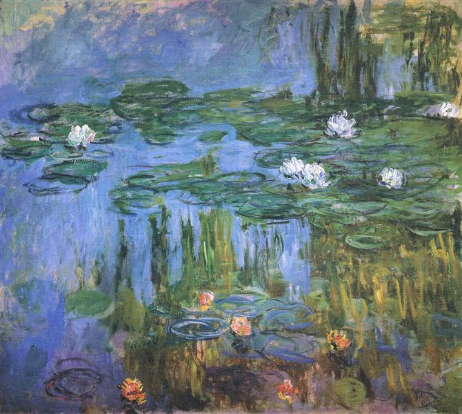

CM-001

Reflets calmes sur l'eau du temps
Claude Monet
Eau
Lumière
Nature
Sérénité
CM-002

La vapeur et la lumière d’une gare en mouvement
Claude Monet
Vapeur
Lumière
Modernité
Architecture
GW-001

Portrait rigide et emblématique de la campagne
Grant Wood
Portrait
Campagne
Symbolisme
Sérieux
VG-001

Voyage au cœur d’un ciel en mouvement
Vincent Van Gogh
Nuit
Tourbillon
Émotion
Étoiles
VG-002

Douleur et introspection dans l’art moderne
Autoportrait Bandage
1889
Vincent Van Gogh
Autoportrait
Douleur
Couleur
Expression
JP-001
Explosion de mouvements abstraits
Jackson Pollock
Abstraction
Mouvement
Gestuel
Expression
GS-001
Lumière et loisir au bord de l’eau
Baigneuses Asnières
1884
Georges Seurat
Pointillisme
Nature
Lumière
Loisir
GK-001

Étreinte dorée et passionnée
Gustav Klimt
Amour
Or
Symbolisme
Passion
AR-001
Légèreté et intimité sous les arbres
Pierre-Auguste Renoir
Nature
Lumière
Intimité
Loisir